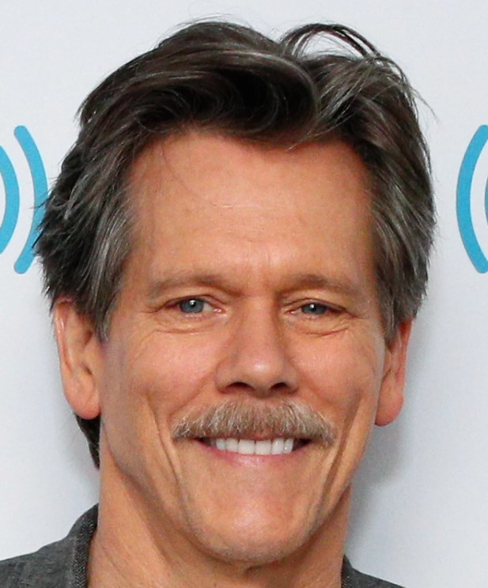

Kevin Bacon
Film
- Footlose
- Apollo 13
- The River Wild
- Loverboy
Television
- The gift
- Lemon Sky
- Will & Grace
- Story of a Girl
As director
- Losing Chase
- Loverboy
- The Closer
Some facts about Kevin
- His middle name Norwood
- His dad graced the cover of Time magazine
- Early on, he was driven to outshine his dad
- He spent his first movie paycheck in a week
- In his waiter days, he was nicknamed "The Chip"
Some personal informations
- Born: Kevin Norwood Bacon
- Occupation: Actor, director, producer, musician
- Years active: 1978 - present
- Spouse(s): Kyra Sedgwick (m. 1988)
- Children: 2, including Sosie Bacon